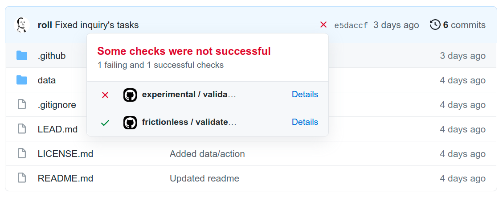
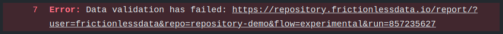
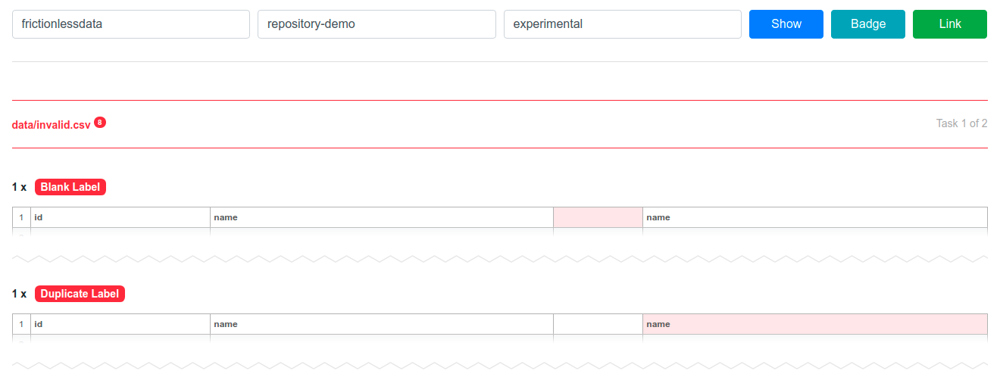

Getting Started
Frictionless Repository will be validating your CSV and EXCEL files on every push, tag, or PR (or based on your configuration). After a commit and a workflow run you will see a link to a validation report within the workflow log or an error message.
Installation
There are two options of installing Fricitonless Repository, as a new workflow or adding a Frictionless Repository step to an existent workflow.
New Workflow
Add a file shown below in your Github Repository:
.github/workflows/frictionless.yaml
name: frictionless
on:
push:
branches:
- main
pull_request:
branches:
- main
jobs:
validate:
runs-on: ubuntu-latest
steps:
- name: Checkout repository
uses: actions/checkout@v2
with:
lfs: true # add this to download LFS files
submodules: true # add this to download submodules
- name: Validate data
uses: frictionlessdata/frictionless-ci@v2
Existent Workflow
Just add this step to an existent workflow:
.github/workflows/(name).yaml
- name: Validate data
uses: frictionlessdata/repository@v2
Usage
After Frictionless Repository installed as a part of your Github workflows it will be validating your data on every push, tag, or PR (or based on your configuration). You will be able to see results of the validation on Github as commit statuses:

If you click on the "Details" link you will be redirected to the workflow logs when you can find a link to a validation report:

Clicking on that link will bring you to the validation report:

There a "Badge" button to reveal a badge for this workflow. You can add this badge to your README.md file or any other markdown file: